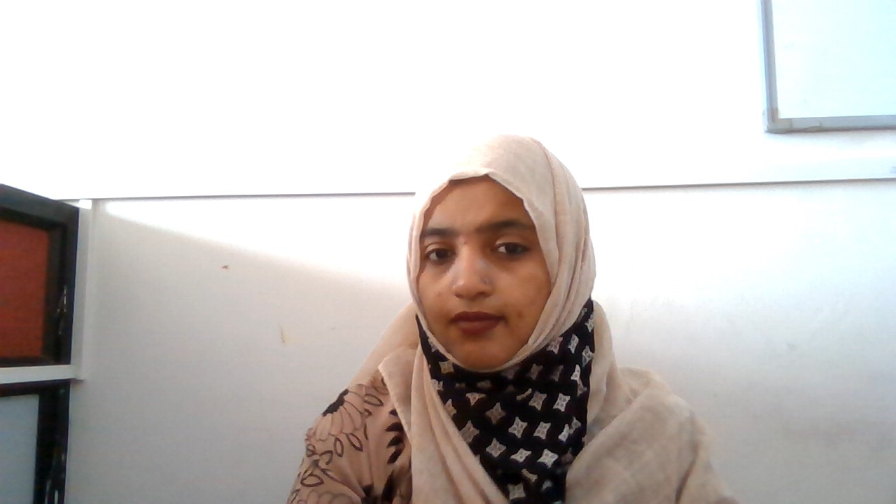
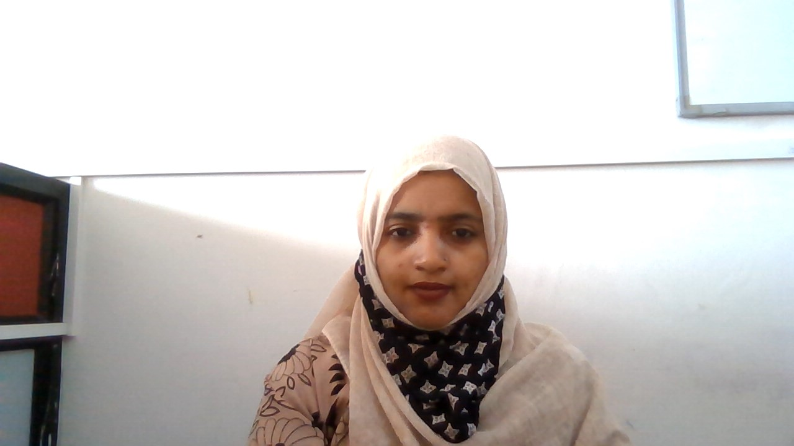

Welcome to my creativity
About
I am an Assistant Professor with 11 years of experience in teaching undergraduates
in Computer Science Discipline.Have basic Technical Skills in Java, HTML , JavaScript,CSS,C,C++,Python.
Looking For a transistion of Job from teaching to information technology field as a software developer.
Portfolio
Publications
1. Amreen Khanam, Archana Hombalimath, Manjula H. T, Krishna Grirish, “A Survey On prescriptive analytics”, JASC, volume 6, issue 1, January- 20192. Anjana Dinesh ,Mohammed Imaduddin, Noor Fathima Shaik Abdul Basith ,Amreen Khanam,”A Survey on Smart Glasses: An audio assistant for visually impaired” JASC journal volume 5 issue XII, December 2018
3. Amreen Khanam, “A Survey on Demand Response Management -an approach for load balancing in Smart Grids” Asian Journal of Engineering and Technology Innovation (AJETI), 2017
4. " Smart Glasses: An Audio Assistance for Visually Impaired” ICIESTM19 HKBKCE, Bangalore Conference FDP’s, Seminar 3
Workshops
1. ATAL workshop on Data Science & Analytics Using Python (DSAP - 2020) from 30th Nov to 4th Dec, 2020 at IIIT Nagpur.2. AICTE Sponsored 6 days STTP on "Python and Mobile Application Development" Phase-2 scheduled from 3rd to 8th of September 2020.
3. AICTE Sponsored one week Online Short Term Training Programme on Machine Learning with Python in Data Science - Applications and Research Perspectives 24/08/2020 to 29/08/2020
Accomplishments
1. Guided the team at Institutions and obtained the mentor award by Bites in 20192. Have been guiding students develop database based mini projects .
3. Guided students to develop web based mini projects
4. Organized and Conducted student development program on mobile app development using appery.io tool
5. Organised and coordinated a two day technical fest TECH i3 2018 13thto 14th March 2018
6. Conducted guest lectur on Higher Education in India and abroad

